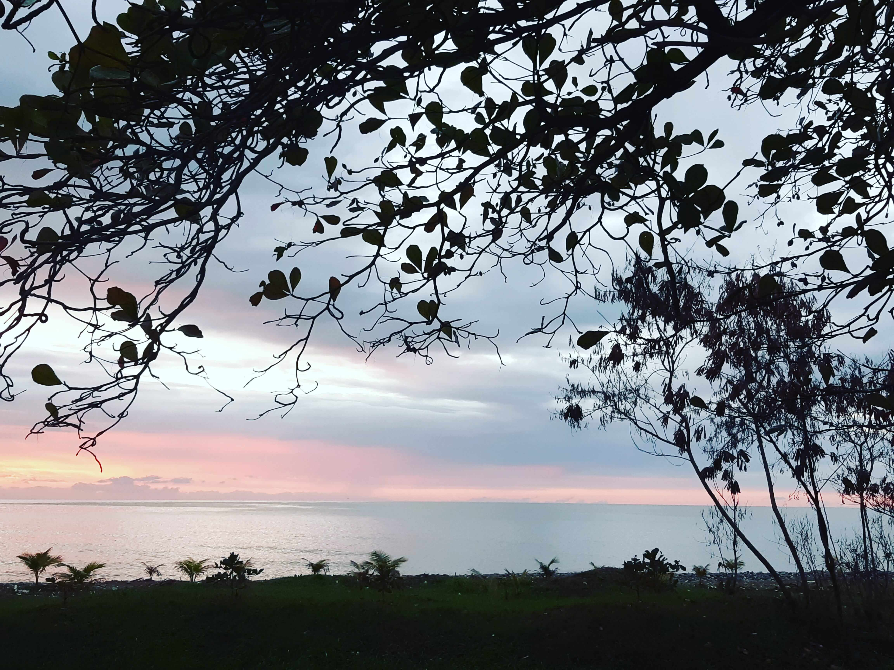
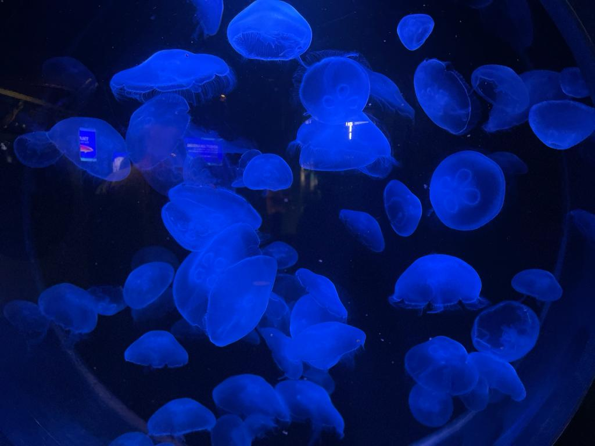
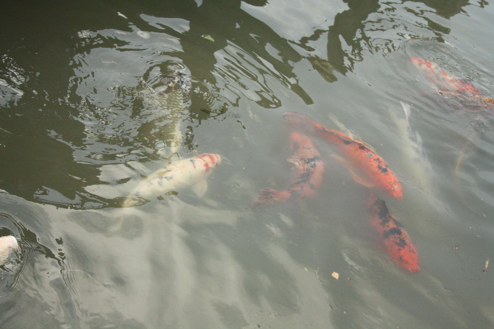
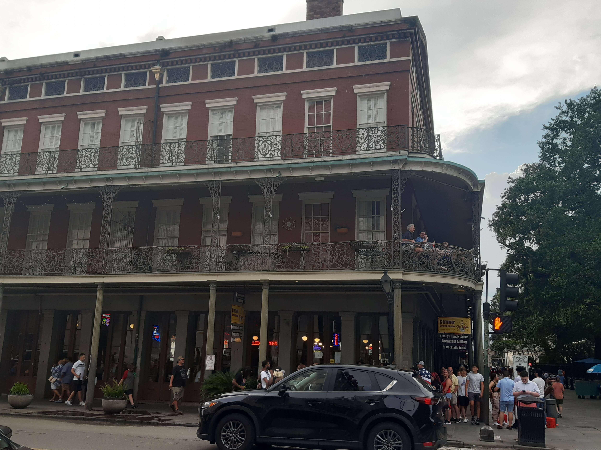
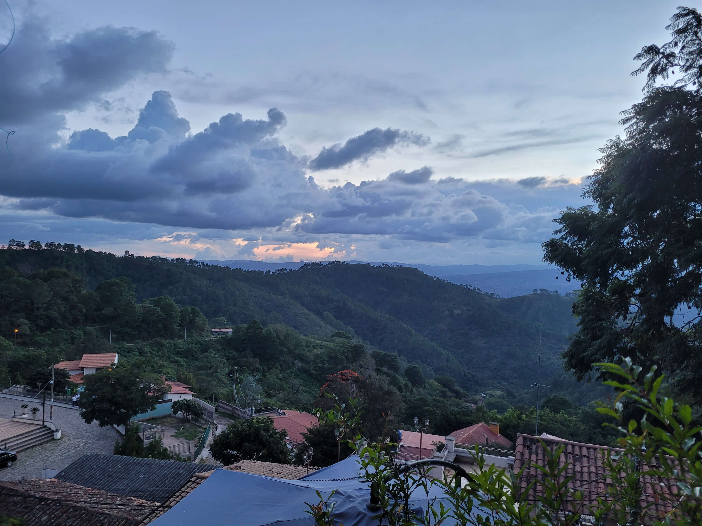
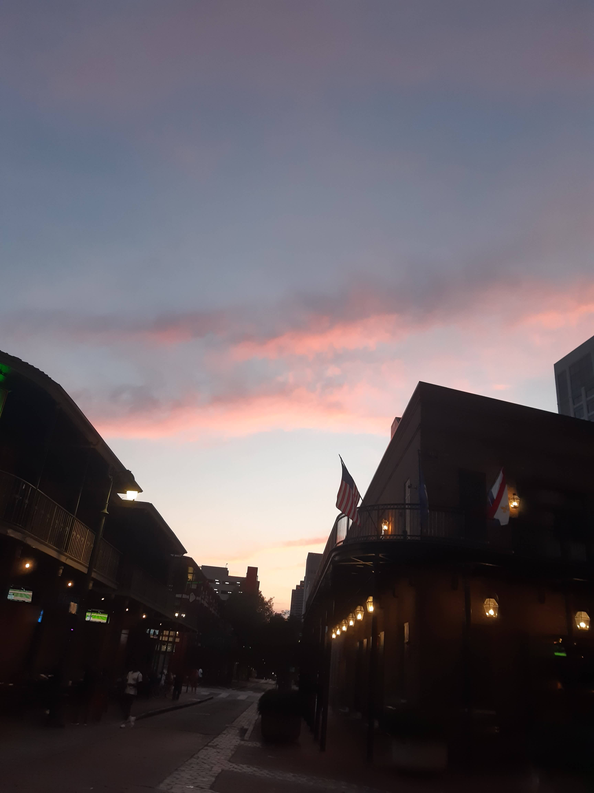
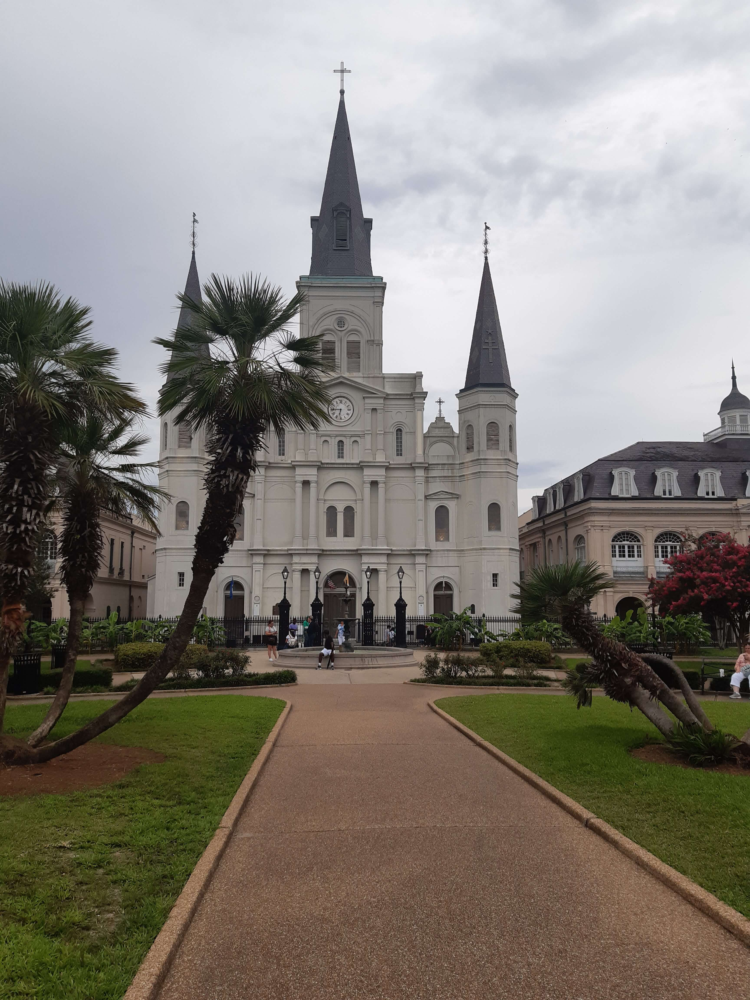

Fotografía
Una pasión convertida en arte
Mar
Fotografías tomadas por mi, en mi lugar favorito el mar, estas fotografías transmiten serenidad y paz.

Flora y fauna
Fotografías tomadas por mi, de la naturaleza, flores y animales muy lindos mostrando la belleza de la creación




Lugares
Fotografías tomadas por mi, en mis lugares favoritos del mundo.



